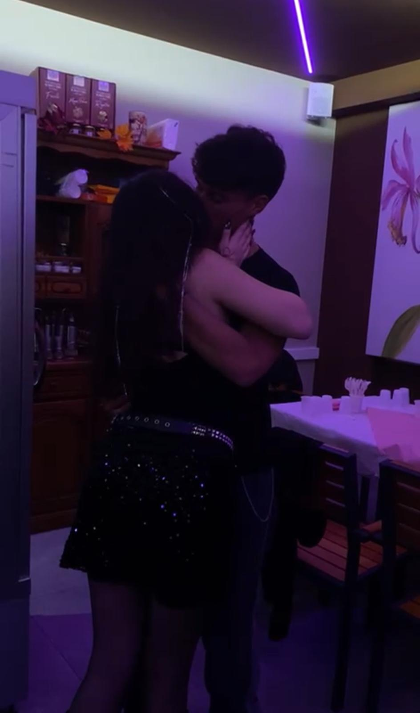
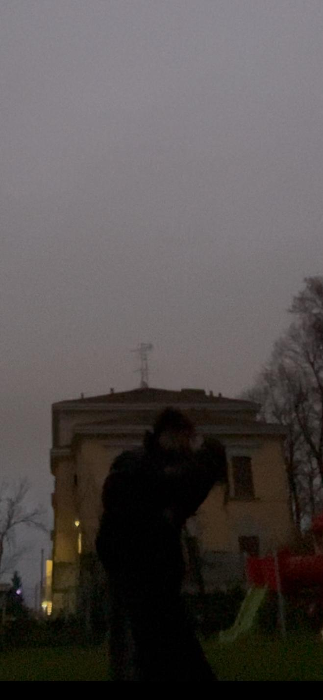
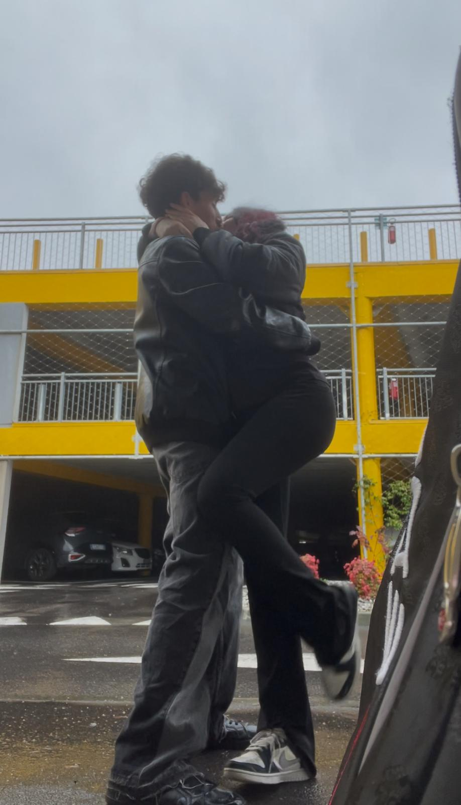
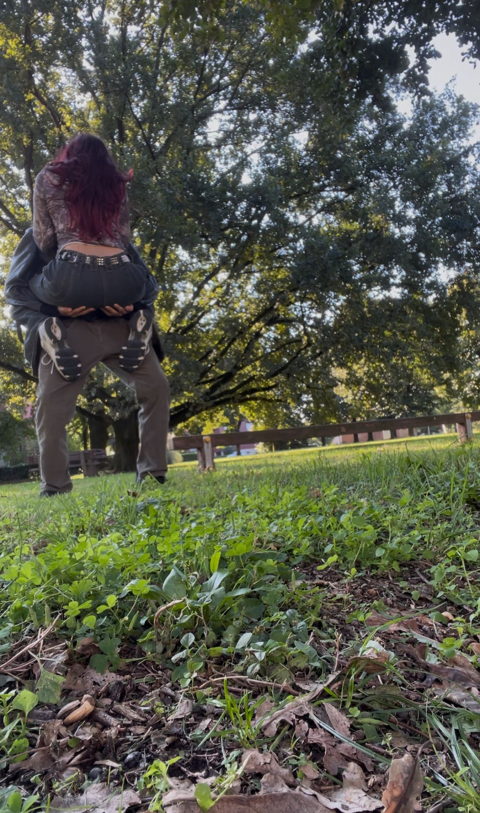
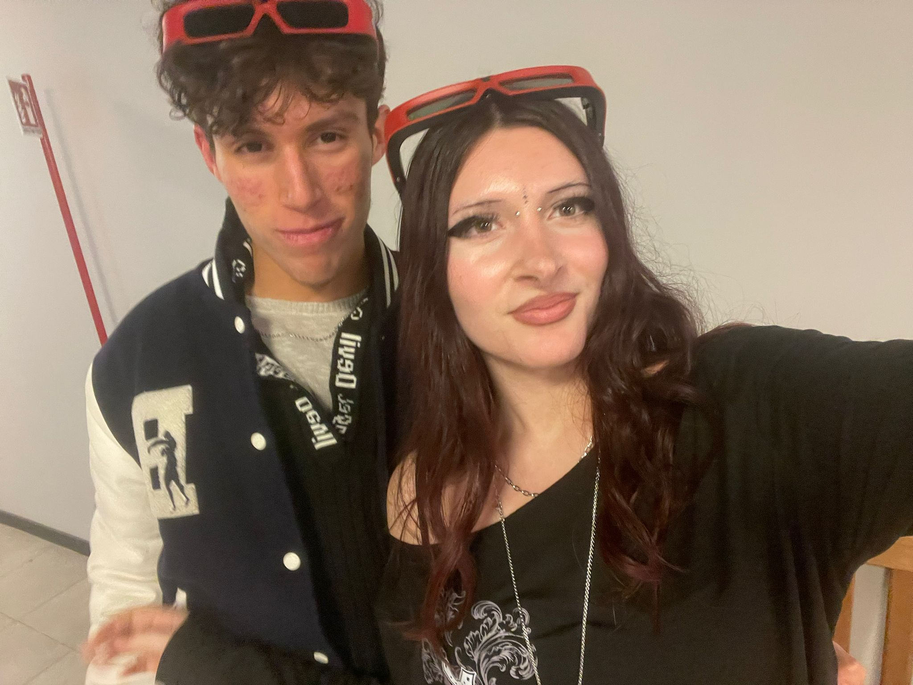
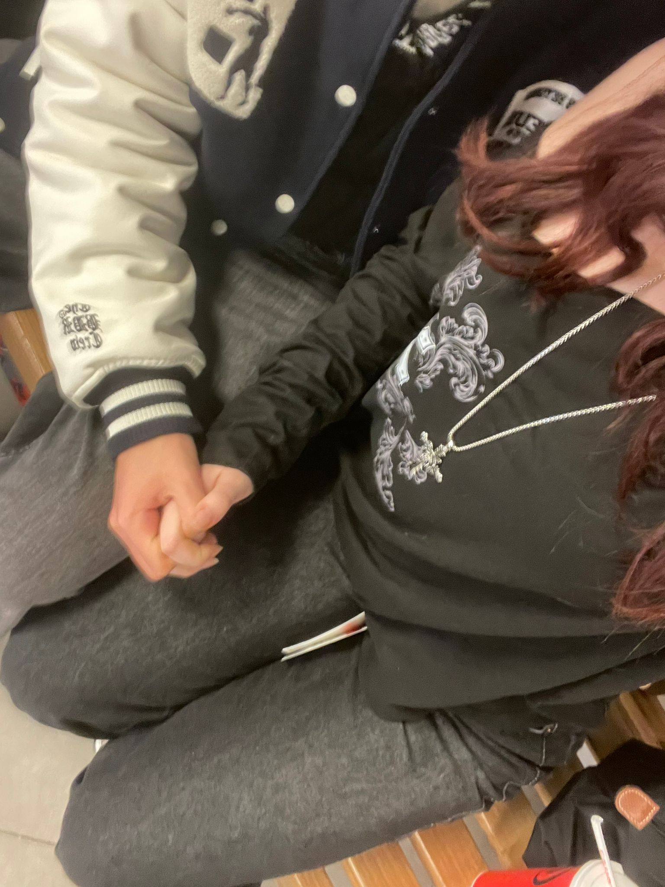
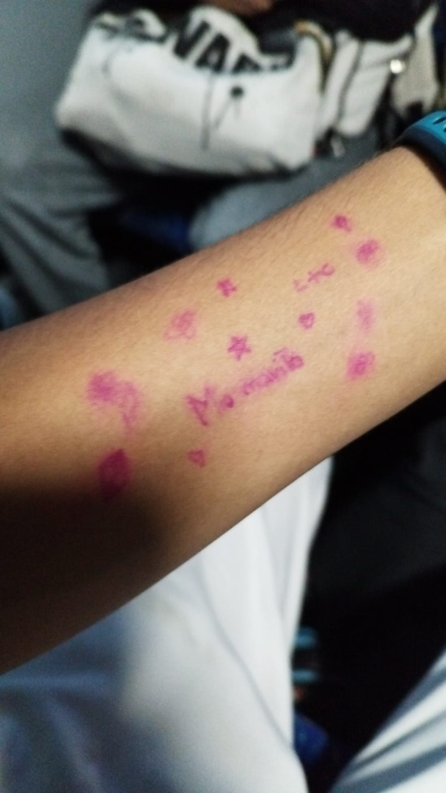

Questi sono i primi 299 motivi per cui amo Milly(Cami si proprio tu).







Amo la tua persona.
Amo la tua sensibilità.
Amo la tua forza.
Amo la tua intelligenza.
Amo il tuo essere alternativa.
Amo la tua iperattività.
Amo la tua empatia.
Amo il tuo essere senza mezzi termini.
Amo sostenerti quando sei stanca.
Amo la piccola pupilla dei tuoi occhi.
Amo l'iride marroncino chiaro dei tuoi occhi.
Amo i riflessi verdi del tuo occhio.
Amo il tuo essere socievole.
Amo il fatto che odi le persone.
Amo che vuoi risolvere ogni problema.
Amo la tua resilienza.
Amo la tua capacità di vedere oltre le cose.
Amo il tuo romanticismo.
Amo il modo in cui parli con gli occhi anche se non vuoi parlare.
Amo la tua ironia.
Amo vederti stare serena.
Amo il modo in cui tu ami con tutto il cuore.
Amo quando diventi folle.
Amo il fatto che mi vuoi correggere ma dimostrando affetto.
Amo quando vuoi farmi dormire anche se potremmo parlare.
Amo la tua volontà nel voler risolvere i problemi prima di andare a letto.
Amo il tuo essere ancora bambina.
Amo il tuo essere fin troppo matura.
Amo il fatto che fai il giuringiurello con promesse serie.
Amo il modo in cui provi intensamente le emozioni.
Amo come cambi in fretta.
Amo che hai voluto farmi entare nella tua vita accettando il mio aiuto.
Amo il tuo coraggio alla trasparenza anche quando può far male.
Amo il modo in cui impazzisci in chat per scrivere che mi ami.
Amo come scherzi insultandomi per poi scrivere in privato che mi ami.
Amo come vuoi essere te stessa con me.
Amo vederti ballare in ogni forma.
Amo sentirti cantare con emozione.
Amo vedere film Disney con te.
Amo quando mi parli dei film che hai visto.
Amo quando mi parli delle storie horror che ti sono piaciute.
Amo come quando sono in crisi, nonostante il dolore tu voglia aiutarmi.
Amo come mi rendi uno scemo totale.
Amo il tuo nasino anche se non lo accetterai mai.
Amo come pensi a me.
Amo come posso prenderti per i fianchi.
Amo stare insieme alle tue labbra.
Amo abbracciarti e come ti adagi su di me con le braccia.
Amo come ti fai prendere dalle mie braccia.
Amo come dilati il mio senso del tempo quando penso a te.
Amo come una settimana è sembrata una vita quando sono con te.
Amo come vuoi aiutarmi con l'inglese e le mie difficoltà scolastiche.
Amo come vuoi accettarmi nonostante i miei deficit.
Amo come mi metti sempre a mio agio per aprirmi sempre di più.
Amo come non mi pressi mai.
Amo che sei diventata un mattoncino della mia vita che voglio costruire.
Amo il fatto che mi dai una motivazione ad essere forte.
Amo come il nostro amore è così bello e diverso dagli altri.
Amo come per descriverti velocemente, dico che sei magica e unica.
Amo come con te mi sento in un altro mondo.
Amo come vogliamo lottare insieme contro le difficoltà che arriveranno.
Amo come mi scrivi che sei appena salita sul bus per andare a casa.
Amo che ti senti a tuo agio a lamentarti con me di quanto una giornata sia stata pesante.
Amo come sei riuscita ad accogliere le mie brutte esperienze.
Amo come ti presento le mie debolezze e tu nonostante esse vuoi dire che sono forte.
Amo il fatto che vuoi togliere i miei limiti.
Amo che come dici che se io lo credessi potrei fare di tutto.
Amo che noti quando provo con tutto me a impegnarmi.
Amo come mi hai scombussolato il mondo.
Amo che vuoi credere in me più io mi mostro a te.
Amo le tue battute esplicite ed ironiche (non sono un femboy e sono etero).
Amo la tua volontà nel voler crescere con te.
Amo in fondo il tuo essere ironicamente esplicita.
Amo quando a caso inizi a ballare.
Amo quando vai in un altro mondo quando vedi un cane.
Amo che mostri che stare con te non è solo una relazione.
Amo quando mi parli dei tuoi dibattiti coi prof.
Amo il modo in cui mi abbracci.
Amo come stai affrontando con me i miei disturbi e non mi vuoi lasciare.
Amo che accetti che io sia appiccicoso.
Amo come vuoi rispettare i miei tempi.
Amo la tua volontà nel volermi spiegare le cose mille volte.
Amo che hai scelto di aprirti con me.
Amo come mi consideri una fonte di serenità.
Amo come mostri la tua felicità.
Amo sentire la tua voce la mattina.
Amo ascoltare le tue poesie.
Amo ascoltare i tuoi libri che scrivevi da piccola.
Amo la tua voce da bambina quando vuoi essere dolce.
Amo ascoltarti quando non vuoi più fermarti.
Amo il fatto che fai parte di una grande associazione internazionale di volontariato.
Amo i versi che fai con la bocca a caso.
Amo come sei bravissima nel pattinaggio.
Amo come ti piace imparare cose nuove.
Amo come riesci a ridere con me pure in inglese.
Amo come ti impegni sempre in quello che fai.
Amo come ti piacciono le storie prima di andare a letto.
Amo come hai il tuo potenziale di essere cattiva con ma non lo fai con me.
Amo il fatto che ogni giorno involontariamente ti amo un pò di più.
Amo sentirti cantare le canzoni Disney con la tua memoria straordinaria.
Amo vedere il tuo sorriso quando mi mostri un tuo talento.
Amo vederti diventare una bambina mentre fai cose stupide.
Amo come appena vedi una ballo brasiliano ti metti subito determinata a impararlo.
Amo la tua incontrollabile risata.
Amo che supporti mia sorella.
Amo che sopporti mia sorella.
Amo come sai che siamo noi contro tutti.
Amo ti senti libera di dirmi quando sei stanca.
Amo che tu non mi nasconda mai abbia bisogno di un momento.
Amo che vuoi sempre fare qualcosa.
Amo che vuoi insegnarmi i tuoi gusti musicali.
Amo che nonostante la stanchezza, e la durezza della giornata, tu mi scrivi comunque.
Amo che mi identifichi in un Border collie.
Amo che sei un Morthino.
Amo che facciamo delle foto nostre ogni mese.
Amo vedere come in quelle foto siamo cresciuti insieme.
Amo come mi dimostri affetto pure su Fortnite.
Amo come giocare a Monopoli tu voglia io sia tuo marito (anche se ti pago le spese mediche).
Amo come riesci a manipolare i miei sogni.
Amo come ci possiamo inventare una nuova lingua e capirci comunque.
Amo il tuo sorriso in mentre sei a lavoro in Studio .
Amo che ti metti a cantare o ballare di prima mattina.
Amo che che mi mandi tiktok sulle cose che vorremmo fare inisieme.
Amo che mi mandi tiktok su gatti sceicchi.
Amo che anche quando sei stanca a caso dici che sono quello giusto.
Amo che vuoi sempre fare qualcosa di nuovo, e non ti arrendo finché non la fai.
Amo che anche se non stai bene non ti vergogni a farti vedere da me.
Amo la forma delle tue labbra stupende.
Amo come noto stiamo crescendo insieme.
Amo che ti sei impegnata tanto per farmi la tinta dei capelli.
Amo che mi hai voluto baciare anche se la mia testa sembrava una scena del crimine.
Amo che mi stai aiutando non a cambiare ma a migliorare.
Amo che mi fai complimenti mentre mi alleno anche se non voglio mettermi in mostra.
Amo vederti dormire serena.
Amo le tue foto la mattina appena sveglio.
Amo trovare un tuo messaggio mentre sono in panico ore prepararmi.
Amo che accetti la mia confusione volendo lavorarci con me.
Amo che mi consigli i vestiti che potrei indossare.
Amo i tuoi nuovi capelli neri che ti stanno da dio.(30/01/26)
Amo che cerchiamo insieme un posto dove andare a San Valentino.
Amo sentirti cantare la tua canzone.
Amo sedermi e sentirti cantare come fossi un bambino.
Amo ti senti libera di dirmi certe cose solo con me.
Amo mi dici serenamente quando sei stanca.
Amo il tuo istinto ribelle contro tutti.
Amo che vogliamo essere noi contro tutti.
Amo che abbiamo combattuto tante battaglie ma vogliamo farlo assieme.
Amo che parlo di me anche alle persone a cui vuoi bene.
Amo che mi vuoi fare conoscere i tuoi amici per farmi capire sono brave persone.
Amo il modo in cui ti appoggi a me.
Amo il modo in cui i tuoi occhi mi guardano ancora da innamorata.
Amo che vuoi sentirti libera con me.
Amo che ti preoccupi comunque se qualcosa potrebbe darmi fastidio.
Amo che affidi a me anche cose importanti, anche se in questo periodo sto andando male.
Amo non vuoi nemmeno scherzare sul tradimento.(Almeno che sia per precisare gli altri)
Amo come ti sei davvero, ma Davvero impegnata per noi.
Amo come mi fai sperare veramente in un futuro.
Amo come dici in modo dolce se io voglia riposare.
Amo come anche da stanca ci tieni a dirmi che sei salita sul bus.
Amo gli audio che mi fai quando sei a scuola.
Amo come capisci da sola quando vorrei affetto .
Amo che scegli di condividere le tue giornate stressanti con me.
Amo come mi stai facendo capi
Amo il modo il tuo modo di amare.
Amo ci tieni sempre a dirmi se sbaglio qualcosa.
Amo il tuo "buongiorno amore" la mattina.
Amo mi chiedi cosa faccio a scuola
Amo mi supporti nella consulta.
Amo come ci tieni a non farmi mai pressione.
Amo come vuoi farmi sentire unico.
Amo il tuo stile Alt e Goth.
Amo guardarti mentre scegli che vestiti stupendi userai domani.
Amo ci tieni ad aiutarmi con l' inglese anche se sai non sono bravo.
Amo che non ti faccia nessuna differenza se mi capita qualcosa di ridicolo.
Amo vedere sempre i tuoi occhi(sono stupendi davvero).
Amo che vuoi farmi capire i miei sbagli per andare avanti insieme.
Amo che sei cosciente del casino nella mia testa.
Amo che vedi un futuro solo con me.
Amo che parli del futuro con solo noi due.
Amo che parli bene di me anche quando non ci sono.
Amo sentirti dire "sei perfetto", mi riempie di gioia anche se non lo dimostro.
Amo farti massaggi alla schiena mentre mi dici qual'e il punto migliore da toccare.
Amo come mi abbracci all'improvviso stringendomi su di te.
Amo quando mi prendi e tiri i capelli per dimostrarmi affetto.
Amo che mi fai scoprire sempre nuove canzoni suoi tuoi generi musicali.
Amo che diventi improvvisamente un estetista per salvarmi dalla tinta rossa.
Amo il tuo sorriso sincero.
Amo che ti senti al sicuro di fare la bimba con me.
Amo che nei momenti che non vuoi sbavare il trucco cerchi di baciarmi comunque sfiorandomi le labbra.
Amo che stai provando a fare mangiare salutare ultimamente.
Amo che silenziosamente combatti con tutti il casino che hai attorno.
Amo abbracciarti mentre tu sei sopra di me.
Amo che ti piaccia che io ti riempi di baci.
Amo che mi chiedi improvvisamente di baciarti quando vuoi.
Amo come vuoi aprirti con me sapendo che non ti giudicherò mai.
Amo vedere il tuo sorriso solo per avermi fatto un regalo.
Amo i tuoi regalini che mi lasciano sempre un segno di te.
Amo fare la spesa insieme a te .
Amo come mi rendi capace di scriverti 100 motivi per cui Ti amo.
Amo quando ci diamo la buonanotte in chiamata.
Amo le foto stupide che mi mandi con il viso attaccato alla fotocamera.
Amo che anche se la giornata diventa pesante te mi strappi un sorriso con qualcosa che ti è successo.
Amo sei a conoscenza ho fallito il test della centoquattro.
Amo sei sempre a conoscenza della mia diagnosi di ADHD.
Amo ti impegni a essere comprensiva con le mie amiche.
Amo mi sei stata accanto la prima volta che provavo il farmaco.
Amo sapevi già che mi avrebbe fatto molto male il farmaco, e avrei dovuto ascoltare mia moglie.
Amo come cerchi sempre la felicità nonostante tutto quello di negativo ti capiti.
Amo il modo in cui stai diventando più sicura.
Amo il modo in cui ti meravigli per gli animali.
Amo come non mi vuoi mai paragonare.
Amo la tua onestà nei momenti in cui mi dici che non vuoi affetto.
Amo trovarti sempre nei miei sogni anche se fai cose strane.
Amo come tenti di spaventarmi ma vedo solo il tuo viso meraviglioso quando ci provi.
Amo vederti come stai sbocciando.
Amo sentire tutti i tuoi sogni.
Amo come hai voluto darmi il bracciale con il tuo nome.
Amo il tuo tono di voce da bambina.
Amo le tue piccole manie di perfezionismo.
Amo come a volte ti sdrai sul letto aspettando ti racconti una storia.
Amo come ti apri con me raccontando con disinvoltura le tue brutte esperienze.
Amo come mi dai la forza di fare certi regali.
Amo come non consideri debolezza i miei disturbi.
Amo ti impegni a non insultarmi quando sei arrabbiata.
Amo i tuoi baci sulla testa che mi dai.
Amo vedere i video del t
Amo che appena svegliata e stanchissimo pensi comunque come darmi il buongiorno.
Amo come dici cose pensando di essere tossica ma ti amo solo di più.
Amo come imiti i miei tic per farmi sentire meno diverso.
Amo ascoltare la tua voce da bambina.
Amo sentire la notifica del tuo messaggio.
Amo quando parli dicendo sarai sempre te la mia prima bimba.
Amo il fatto che dimostrando la tua gioia io riesca a Piacere alla tua famiglia.
Amo che ancora dopo mesi mi rendi ancora scemo e innamorato quando usciamo
Amo come sappiamo entrambi quanto ci vogliamo.
Amo come ci impegnamo entrambi per avere un futuro assieme.
Amo i momenti in cui mi dici che vorresti un cagnolino in futuro.
Amo il tuo sorriso da innamorata ancora dopo mesi.
Amo come cogli i miei piccoli gesti di affetto invisibili quasi anche a me.
Amo come mi inviti sempre a impegnarmi e riponi fiducia in me.
Amo come ti accorgi quando sono stanco e decidi di andare a dormire al mio stesso orario.
Amo come riesci a sentire cose a cui nessuno riuscirebbe a sentire.
Amo come mi vuoi dire tutto senza alcun filtro.
Amo che per te i silenzi non siano alcun problema.
Amo come anche quando sei arrabbiata ti trattieni dal non volermi offendere.
Amo come riesci a manifestare le tue emozioni tramite le canzoni.
Amo ascoltare le tue canzoni che crei improvvisamente.
Amo vedere la tua mente che lavora per cercare un nome d'artista adatto.
Amo ricevere tuoi messaggi improvvisi mentre sono a scuola.
Amo come hai voluto introdurmi alla tua famiglia.
Amo aspettare il tuo messaggio appena finito scuola.
Amo accetti le mie chiamate anche se sei stanca e vuoi dormire.
Amo non hai vergogna a farti vedere dormire da me.
Amo vederti mentre ti strucchi serena e mi parli delle cose che ti danno fastidio.
Amo mettermi in posizione per farti dormire il miglior modo possibile su di me.
Amo soddisfare i tuoi piccoli bisogni precisi.
Amo dormire a col telefono appena spento da una tua chiama.
Amo pensi sempre cosa possa essere giusto per me.
Amo che hai visto tutti i miei lati e nonostante questo scegli di stare con me.
Amo che dopo mesi e mesi utilizziamo ancora il makapaka.
Amo guardare i tuoi film preferiti con te.
Amo ascoltarti finché non mi si chiudono gli occhi per il sonno.
Amo come sei sempre comprensiva verso i miei impegni e mi saluti dolcemente.
Amo vederti appena svegliata sul letto.
Amo i momenti in cui ci fermiamo e ci guardiamo negli occhi senza dire nulla.
Amo il tuo modo di prendere i baci che ti mando imitando di sniffarli.
Amo vederti come sei felice per un concerto saltando come una bambina.
Amo come nella giornata ogni giorno ti prendi comunque un tempo per me.
Amo che anche da stanca, stai vicino a me mandandomi reel tiktok.
Amo come ti interessi su miei sogni e al mio futuro, parlando come se sicuramente riuscirei a raggiungerli.
Amo come sembriamo sempre un team.
Amo come parli del futuro con me in maniera completamente normale.
Amo il modo in cui sogni in Grande.
Amo come non hai alcuna paura di portarmi in un cimitero e accompagnarti lì.
Amo come ti fidi a dirmi i tuoi segreti più intimi.
Amo i tuoi abbracci improvvisi e calorosi.
Amo i momenti in cui con un braccio mi prendi la testa.
Amo poterti portare sempre io la borsa.
Amo i video che mi mandi la mattina
Amo come mi dici che con me ti stai abituando ad avere degli standard alti.
Amo che la mattina uno dei primi visi che vedo sia il tuo
Amo come stai combattendo tutto il tuo passato rendendomi partecipe.
Amo essere presente nei giorni in cui tutto il mondo ti stanca .
Amo rimanere aggiornato su cosa ti faccia male in quel momento .
Amo come abbiamo combattuto insieme in questi 5 mesi nonostante tutto.
Amo abbiamo sempre in mente un continuazione il nostro futuro assieme.
Amo il fatto che compierò 17 anni al tuo fianco.
Amo formare piccoli cerchi sulle tue mani a volte per rimanere concentrato.
Amo che hai sempre trovato qualcosa di bello nei miei regali.
Amo sapere che dormi la notte con Edward, Ugo e la felpa che ti ho dato.
Amo come ogni giorno mi dai sempre più motivi per amarti.
Amo sapere che vogliamo percorrere insieme il nostro futuro, non potrei farlo con persona più straordinaria.
Amo guardarti e realizzare che persona straordinaria ho accanto.
Amo sapere che un giorno dopo anni potrei chiamarti realmente "moglie"
Amo avere sempre in testa che vorrei solo te nella mia vita, solo con te affrontare insieme tutto quanto
Amo questo giorno (14 febbraio) per il semplice fatto che posso guardarti da vicino e abbaracciarti
Amo e mi considero il ragazzo più fortunato di tutti ad avere una persona come te al mio fianco.
Amo che più tempo passa più trovo motivi per amarti innamorandomi sempre di più della persona meravigliosa che sei.
Amo. tutto. di. te.
Sono i primi 299 motivi per cui ti amo, è stato facile aggiungern 200 dalla scorsa lista data la persona che sei. In ogni caso
questo sito è un piccolo pensierino per ricordarti alcune volte un paio di motivi per cui sei amata e per me sei veramente importante, Ti amo da vivere."